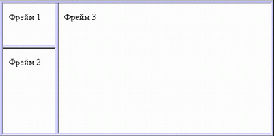

Web и DHTML
Элементы HTML
Леонид Волканин
ИМКН УрФУ

<!DOCTYPE html><html><head> <meta charset="utf-8" /> <title>...</title> </head><body><p><b>Этот текст будет полужирным,<i>а этот - ещё и курсивным</i></b></p><p> © 2015 <!-- комментарий --> </p></body> </html>
Слово — последовательность символов, не являющихся пробелами
Пробелами считаются:
Обозреватель заменяет последовательность пробелов на один пробел
Неразрывный пробел ( ), если надо несколько подряд
Перенос текст на следующую строку — по пробельным символам (но не ), запрет переноса — <nobr>...</nobr>*
* <span style="white-space: nowrap">
Исключение — элемент <pre> (сохраняет пробелы в содержимом)
Дефис («-», -) отображается как обычный символ («без пол-литры не разберешься»)
Мягкий перенос (­) указывает, где возможен разрыв строки:
<h1>..<h6>, header — заголовок h1, h2, h3, h4, h5, h6<p>, paragraph — абзац, по умолчанию отступы сверху и снизу<pre>, preformatted — сохраняет пробелы и разрывы<br />, break — разрыв строки<hr />, horizontal ruleЛогическое деление !
<body><section><nav><article><aside><header>, <footer><address>Ссылки и определения
<a href=".." target=".." ping=".." rel=".." media=".." hreflang=".." type=".."> — для гиперссылок<q> — для коротких цитат
<cite> — для ссылок на названия книг и других источников<dfn> — для определений термина<abbr> — для сокращений (УрФУ)в HTML есть всё для технического писателя
<code> — фрагмент программного кода<var> — переменные<kbd> — ввод с клавиатуры<samp> — примеры выводаЗадание шрифта
<em> — выделение текста<strong> — сильное выделение текста<small> — Нажмите «Принять», чтобы продолжить работу <sub and sup> — Ai + x2 = Cik<i> — курсив<b> — полужирныйМожно логически выделить процесс копи-пасты редактирования — <del> и <ins>
И ещё — языки в мире бывают разные...
<bdo dir="rtl|ltr"> — Unicode bidi (bidirectional) override<ruby>, <rt>, <rp>:Остатки в кучу
<span> — абстрактный строчный элемент<mark> — выделить и обратить внимание<time datetime="2015-09-17 14:30"> — машинно-читаемая дата<progress value="9" max="10"> — <meter value="7" min="2" low="5" high="9" max="10" optimum="6"> — Упорядоченные списки (Ordered list)
<ol start="1" reversed><li value="2"> содержимое </li></ol>type="A | a | I | i | 1", сейчас вид номера управляется стилевой настройкой list-style-type: armenian | decimal | georgian | lower-alpha | lower-greek | lower-latin | lower-roman | upper-alpha | upper-latin | upper-romanНеупорядоченные списки (Unordered list)
<ul><li> содержимое </li></ul>type="disc | circle | square", сейчас вид маркера управляется стилевой настройкой list-style-type: circle | disc | square или list-style-imageСписки определений, диалоги
<dl><dt>Captain Obvious</dt>
<dd>уникальный супергерой</dd></dl><dialog><dt>Гамлет</dt>
<dd>Быть или не быть, вот в чем вопрос</dd></dialog>И большие цитаты - <blockquote>
<img width="100" height="200" src="/cat.png" alt="котик" />
<canvas/><audio><source src="music.mp3"></audio>
<audio> — это визуальный элемент
<video height="300" poster="pictures/poster.jpg"><source src="movie.mp4"></video>
к тем же атрибутам добавляются
<audio><source src="music.mp3"></audio>
<source> может быть несколько — это источники
<object type="application/x-shockwave-flash"data="mouse.swf" width="400" height="300"><param name="quality" value="high"><param name="wmode" value="opaque"></object>
<iframe src="URL"> — про него позже
| <thead><tr><th>1</th> | <th>2</th> | <th>3</th></tr></thead> |
|---|---|---|
| <tbody><tr><td>4</td> | <td>5</td> | <td>6</td></tr> |
| <tr><td>7</td> | <td>8</td> | <td>9</td></tr></tbody> |
| <tfoot><tr><th>10</th> | <th>11</th> | <th>12</th></tr></tfoot> |
| 1 | 2 | 3 |
|---|---|---|
| 4 | 5 | 6 |
| 7 | 8 | 9 |
| 10 | 11 | 12 |
| 1 | 2 | |
|---|---|---|
| 4 | 5 | 6 |
| 8 | 9 | |
| 10 | 11 | 12 |
| <thead><tr colspan="2"><th>1</th> | <th>2</th> | <th>3</th></tr></thead> |
|---|---|---|
| <tbody><tr><td rowspan="2">4</td> | <td>5</td> | <td>6</td></tr> |
| <tr><td>7</td> | <td>8</td> | <td>9</td></tr></tbody> |
| <tfoot><tr><th>10</th> | <th>11</th> | <th>12</th></tr></tfoot> |
HTML 4 позволял авторам разбить окно обозревателя на несколько независимых подокон (фреймов)
<body> целиком заменяется на <frameset>
<!DOCTYPE HTML PUBLIC "-//W3C//DTD HTML 4.01 Frameset//EN" "http://www.w3.org/TR/html4/frameset.dtd"><html><head>...</head><frameset cols="20%, 80%"><frameset rows="100, *"><frame src="logo.html"> <frame src="menu.html"></frameset><frame src="main.html"></frameset> </html>

<iframe> — используется и в HTML5
Обычно при переходе по ссылке текущий документ заменяется новым
<a href="..." target="имя окна"
if (window.self != window.top) { нас открыли во фрейме }